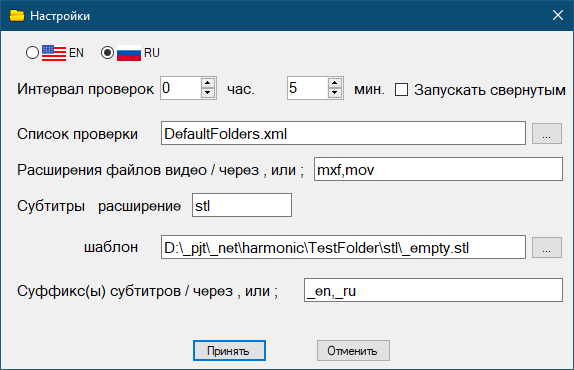

Настройки

- Интервал проверок - с какой частотой запускать проверку по таймеру
- Запускать свернутым - если установлен флажок, то программа при запуске сворачивается в трэй
- Список проверки - файл, в котором хранится список проверяемых хостов. Создается автоматически. Можно иметь несколько таких файлов.
- Расширения файлов видео - перечисление расширений файлов видео (через , или ;), для которых проверяется наличие субтитров.
- Субтитры расширение - расширение файлов субтитров
- Субтитры шаблон - файл субтитров, который копируется вместо отсутствующих
- Суффиксы субтитров - перечисление суффиксов языков (через , или ;), для которых проверяется наличие субтитров.
Суффиксы и расширения указываются в одну строку, разделяются , или ; Пробелы учитываются!